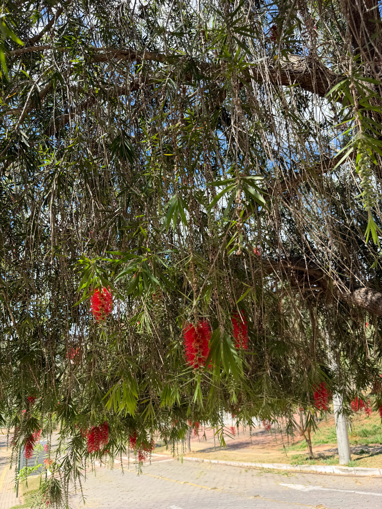
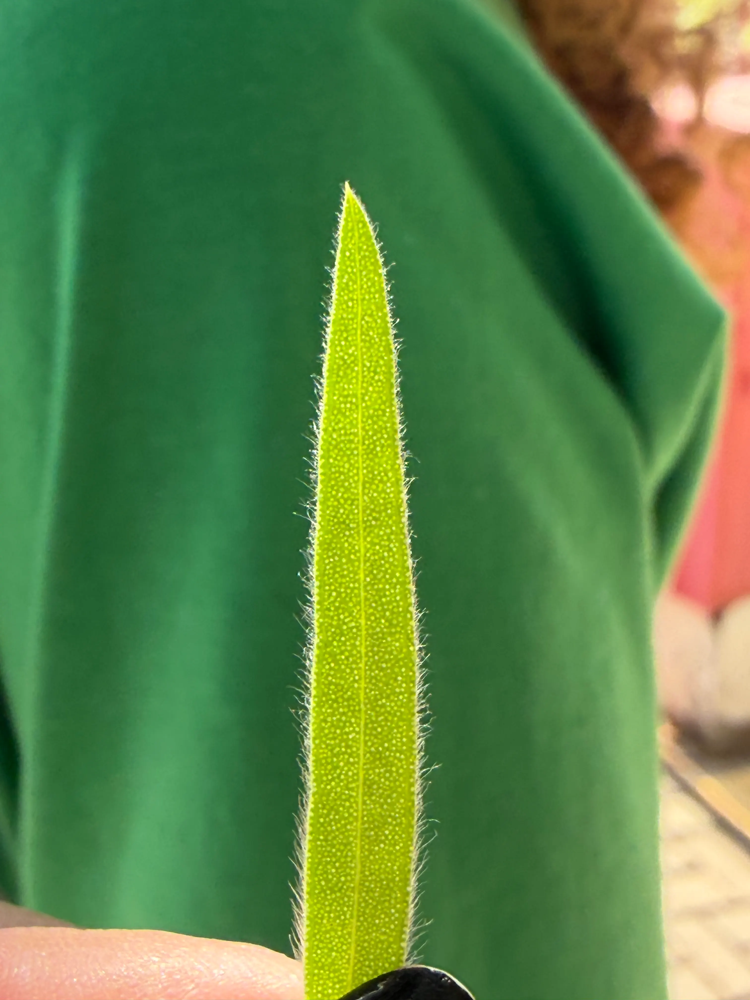
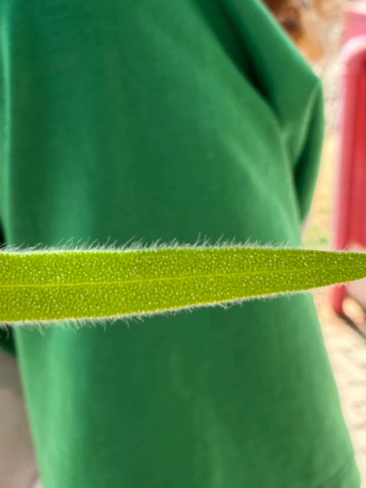
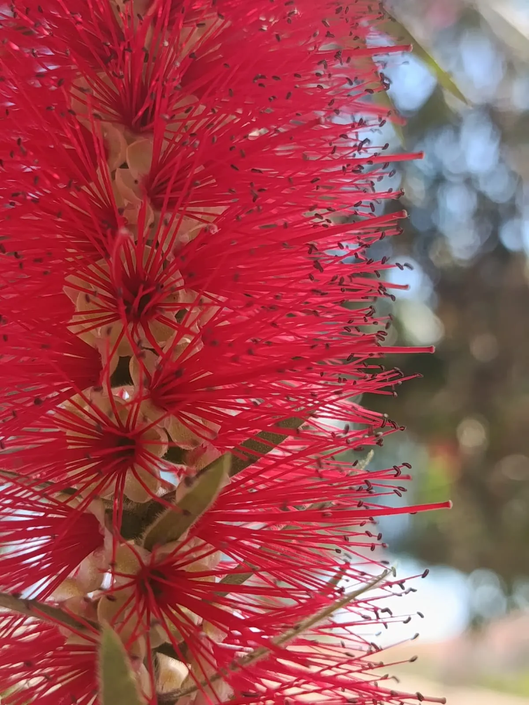
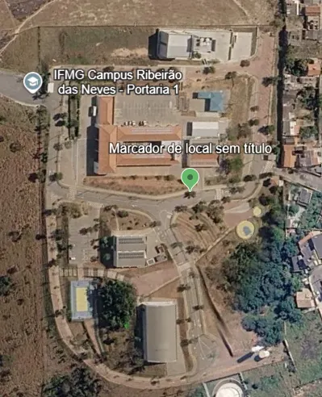

Callistemon sp.
NOMES(s) POPULAR(ES)
Escova-de-garrafa
GÊNERO
Callistemon
FAMÍLIA
Myrtaceae
Nomes populares alternativos.
escova-de-garrafa-vermelha e limpa-garrafa.
Imagens




Origem e distribuição geográfica
As plantas tradicionalmente classificadas no gênero Callistemon são originárias principalmente da Austrália, com algumas espécies também encontradas naturalmente na Nova Caledônia. Devido à beleza de suas flores, são cultivadas como ornamentais em diversas regiões do mundo, incluindo o Brasil.
Status de ocorrência
A “escova-de-garrafa” é exótica no Brasil, ou seja, não ocorre naturalmente no território brasileiro, tendo sido introduzida principalmente para fins ornamentais.
Características
A “escova-de-garrafa” é facilmente reconhecida por suas inflorescências, conjuntos de pequenas flores agrupadas, que apresentam formato cilíndrico e lembram uma escova utilizada para limpar garrafas. Essa aparência característica se deve principalmente aos estames, estruturas responsáveis pela produção do pólen, que são longos, numerosos e geralmente vermelhos. Suas folhas são simples (formadas por uma única lâmina), geralmente estreitas e dispostas de maneira alternada ao longo dos ramos. Os frutos são pequenas cápsulas lenhosas, de consistência dura, que armazenam as sementes e podem permanecer presas aos ramos por vários anos.
Curiosidades
Você sabia que a parte vermelha e vistosa da escova-de-garrafa não é formada principalmente por pétalas, mas pelos estames das flores? Essas estruturas, além de produzirem o pólen, ajudam a atrair visitantes florais. As flores também fornecem néctar para diferentes animais, incluindo aves e insetos.
Outra curiosidade é que, em algumas espécies, as cápsulas lenhosas podem permanecer fechadas por anos, liberando sementes após estímulos ambientais, como a passagem do fogo.
Localização no
Campus

PRÓXIMO À
Quadra de basquete 3x3
COORDENADA
19°45'34.32"S 44°05'20.10"W